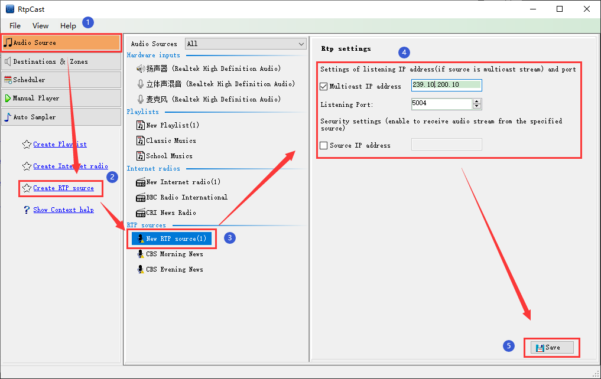

|  |
|
Introduction |
|
RTP sources is a common audio input way. It takes RTP protocol as the carrier and forwards the audio stream to the destination in the system by listenning the unicast or multicast address and port. It is suitable for the occasion that needs to be monitored. |
|
Operation |
| (1) Click the [Create RTP source] in the left navigation panel, or right-click in the blank area of "RTP sources" in the middle, and then click the [Create RTP source] menu item. By default, the sub item name "New RTP source (x)" is generated(x = 1,2,3...). At this time, the user can right-click on the sub item,and then [Rename] or [Delete] the sub item. |
| (2) In the "Rtp settings" panel on the right, you can edit the listening IP address (if you are listening to multicast address, you must check the "Multicast IP address" item and enter the multicast address in the edit box; otherwise, cancel the "Multicast IP address" item , the system only listen to the local IP)and port, And the security option "Source IP address" (You can check it and enter a define the source IP address to make the audio source secure). |
| (3) Click [Save] to save the configuration parameters. |